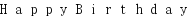

2015/0223Mon黒と白の表情
3rd Year Birthday Live
無事駆け抜けました
ありがとうございました‼︎
今回は自分の心の中で何かが
大きく動いた気がします
楽しかった〜
全身筋肉痛痛い(T . T)
3万8千人の前で踊ったり
煽ったりするのは本当に
気持ちが良くて楽しかったです！
寒い中、誰一人欠けることなく
無事乗り切れたのは
本当に嬉しいことです。
今思い出しただけで泣けるくらい
みんなが精一杯頑張りました
素晴らしいライブになれたのは
ファンの皆様のおかげだとも
思ってます。
寒い中本当にありがとうございました！
私のタオルとかうちわを
見つけるとやっぱり元気がでて
少しでも私を見てくれてる人が
いるって感じられて
頑張ろうと思いました✨
今回私のグッズに完売が出たり
タオルやうちわが今まで以上に
多くてすごく嬉しかった♪
ライブでの元気が貰えました！
755でも応援やじコメありがとう！
お花も綺麗でした。素敵‼︎
ありがとうございました(>_<)♡
写真は撮る時間がなくて...
皆さんに見せられないのが
悔しい〜


そして研究生の昇格発表。
いきなりでびっくりしました
話を振られた時、感極まり
声が出ませんでした。
ごめんなさい...
みんなに支えてもらうばかりで
なかなか結果が出せなかったり
握手会でも話そうと思った
ことがなかなか言えなかったり
そろそろこんな私を
飽きてくるのではないかとか
ずっと不安でした
"研究生打破"が私の目標でしたが
これからが私のスタートなんだな
と思ってます。
諦めず前に進みます。
だから皆さんこれからも
よろしくお願いします
今回のライブは未央奈とずっと
一緒にいた気がする。
大食いシスターズ！
未央奈といると安心するの。
未央奈も
みり愛といると落ち着くって
言ってくれた〜♡
昇格祝いに高山さんが
足に貼るカイロをくれました♡笑
高「みり愛ちゃん昇格祝いに！」
渡「なんですか？」
高「これ本当温かいから！」
渡「(´･Д･)」
使いまーすo(^▽^)o
2月19日に姪っ子が誕生しました！
甥っ子しかいなかったから
初女の子！
人のお腹の中からまた違う命が
産まれるって凄いことだよね...

手を握ってくれた(^ ^)


3日 るかさん
6日 バブさん
13日 さゆみさん
みちょさん
14日 かるちなさん
16日 はづきさん
りーあんさん
りょーさん
17日 IDOL▲ TRAPさん
れみちゃん
19日 冷えピタさん
しんご(17)さん
20日 萌菜さん
21日 わたろーさん
あやみんさん
22日 つかぴょんさん
ぷんちさん
23日 みゆりんさん
たっちゃんさん
24日 マナブゥーさん
れいれいさん
まいさん
28日 ハル坊さん
じゅんはんさん
あおいさん
ふにゃりんさん
万理華さん♡橋本さん♡ちはるさん
お誕生日おめでとうございます！

また見てね
みり愛
2015/02/23 20:54


コメント(772)
僕には7時間半があっという間に感じました。それだけ楽しかったんだと、自分で思います。いやー、もう乃木坂は24時間でも見ていられますわ笑
このライブで、乃木坂メンバーとファンの団結力の強さを感じました。ソロ曲と乃木坂の詩のときのサイリウムが、一色に染まってむちゃくちゃ綺麗だったのが印象に残ってます。
全曲を振り返るということで、初めて生で見て聴く曲もたくさんあって、「この曲ってこういう感じの振り付けなんだなー」とか、新しい発見もありました。知らないコールとかもあって、自分も乃木ヲタとしてはまだまだかなーと思いました笑
ガールズルールとハウス！は大好きで、もう楽しすぎて楽しすぎて(((o(*ﾟ▽ﾟ*)o)))
あと、ダンケシェーンからのロマンスのスタートはヤバかったです。沸きっぱなしでヘトヘトになりました笑
こうしてライブを振り返ってみると話が尽きないですねー。とにかく、最高のライブでした！またすぐにでも大きなライブをやってくれないかなー、なんて笑
振り入れとか演出とかリハーサルとか、詰め込むことが多くて大変だったと思います。改めて、本当にお疲れ様でした。そして、幸せなひと時をありがとうございました。休める時に、ゆっくり休んでください。
乃木坂46、4年目も、全力で応援させていただきます！一緒に登ろう上り坂！！
新曲も楽しみだー！(((o(*ﾟ▽ﾟ*)o)))
また握手会いくねー^ - ^
これからも応援する！
バースデーライブおつかれ！！！
正規メンバー昇格おめでとう(((o(*ﾟ▽ﾟ*)o)))
研究生昇格おめでとう！ヾ(@^▽^@)ノ
これからもっと忙しくなると思うけど頑張ってね！₍₍ ( ๑॔˃̶◡ ˂̶๑॓)◞♡
体ゆっくり休めてね♪
正規メンバーおめでとう！
涙が止まらなかったね
みんな喜んでたね！！
雨の中！半袖で寒い筈なのに！
とーーーーーーーーーーーーーーーーーーーーーーーーーーっても明るくげんきで！雨にも負けず、テレビで見てる僕は暖かい筈なのになぜか、鳥肌がたちました！とっても、素敵なライブをありがとうございます(_ _)
とても、感謝しております！
そんな、乃木坂が大好きです！
もともと、アイドルなんて興味がなく、きらいだったのですが、乃木坂だけは特別な存在です！
指望遠鏡は俺にとって初めて乃木坂に出会った曲でとても、感謝しかありません！！！！
まだ、メンバー誰一人あったことないけれど、野球で有名になって厳しいかも、知れませんがプロになって、絶対に、乃木坂のメンバーに会いにいきます！それまで、辞めないで下さい！！！！！
初期の頃より成長していて、進化していますねw
乃木坂はどこまでもいつまでも上り坂！がんばって下さい！！！！！！
あと、すごいですね！2月22日が乃木坂の日になっちゃって！カレンダーに追加だなw
最年少で同い年で西武ドームというでかい球場で立派で踊っており、とてもすごいとかんしんしました
最後になりますが、
本当に！
最高なバースデーライブを寒い中やって下さりありがとうございました！
とても、輝いていましたよ！
これからも、応援致します！！！
いつまでも...................
ありがとうございました！
げんちゃん号泣してました。(笑)
よかったよ！！！
正規メンバー昇格おめでとう٩( ᐛ )و
ライブお疲れ様！直接西武ドーム行けなかったけど、スカパーでも見れなかったんだけど、VTR見てたら感動しました！
ほんとにありがとうございました！
そして昇格おめでとうございますo(^▽^)o
これからも頑張っていきましょうね！
バースデーお疲れ様！
楽しかった！
かわいかった！
またゆっくりコメントするー！
ライブ泣いた。
4月の京都でげんちゃんらと連番で笑かしにいくからまっててー笑
昇格おめでとう！
握手会行こうかな
昇格、おめでとう♡これからも応援するよ♡
おめでとう。
新しい命の誕生だね！！
Birthdayliveも凄く良かったよ！！
お祝いごとばっかりだね！！
すごく嬉しいことだ～～
これからも、みりあちゃん応援してます
とても楽しかったですヽ(´▽｀)ﾉ
そして昇格おめでとうございます！！！
いえい！いえい！
みり愛、ライブ良かったぞ＼(*⌒0⌒)ｂ♪。
みり愛絶賛応援中(*^▽^)/★*☆♪。
みり愛お疲れ様！
ライブめっちゃ楽しかったよ
何と言っても、業務連絡の昇格発表すごい嬉しかったです^ ^
みりあたんこれからも頑張ってねーヾ(＠⌒ー⌒＠)ノ
みりあーーーーー！
昨日は本当にお疲れ！！
最高のライブだったね♪
最後の研究生昇格は号泣だった
みりあーーってすげー叫んで涙をボロボロ
握手会で直接お祝いのいいにいくね！
アンダーライブも絶対にいくからね！！
また1年頑張ろう♪
昇格おめでとうっ
みりあちゃんと知り合って早３、４年
乃木坂に入って約２年
活躍を見てきて
昇格できてよかったと思ったよ
ひながねみりあかわいい〜ってずっと言ってるんだｗｗｗ
これからも乃木坂として頑張ってね！
みり愛が昇格したのが嬉しすぎてコメントしにきちゃった‼︎笑
ほんとにおめでと‼︎
これからもずっと応援し続けるね‼︎
昨日もすっごく可愛かったよ(๑><๑)
そして今日はゆっくりできたみたいで何よりです。
これからも頑張ろう(๑و•̀ω•́)و
昨日はほんと感動したよ！
ライブも楽しかったし、研究生からの昇格っていうサプライズもあったし！
恥ずかしながらちょいと涙が出ました笑
これからもがんばれ！
アンダーライブも行きたい！
これが初コメです！
昨日のライブでめっちゃ好きになりました。
これからめっちゃ応援します！！
嬉しすぎてないちゃったー笑
これからも応援してるんで次の目標に向かって突き進んでください٩( 'ω' )و ！
正規昇格おめでとう！
僕の中では今までも研究生ではなく正規メンバーと変わらず見ていました！
これからも飛躍を期待しています。
おつかれさま！！
そして昇格おめでとう！！
みり愛が言うようにここからがまたスタートライン！！
これからも応援するね♡
らいぶお疲れ様 ♡♡
昇格おめでとう .!
スカパーもみれなかったし
ライブにも行けなかったけど
北海道から応援してたよ ♡♡
ななみんとまりっかと同じ誕生日なの ！！
姪っ子さんと一日違い！
おめでと ♡♡
昇格おめでとう〜♡本当本当に嬉しかった！！！！
最近みり愛しかみれなくなってきて辛いよおお(*˘︶˘*).｡.:*♡
これからも(*´ノ0｀)がんばって♪
あいりんぬってこと今度連番しようね〜って話もしてるの〜！4月12日いくから待っててね〜
そして、昇格おめでとう！！
テレビでみてて、ほんとに泣いた！！
お疲れ様!!＼(^o^)／
ガールズルールの衣装
似合うね～(^^)v
そして、昇格おめでとう♪
755にも書いたけど…
みり愛ちゃんの努力が
認められたってことだと
思うから、ほんとに嬉しい!!
これからもっともっと
みり愛ちゃんを世間のひとに
知ってもらってほしい♪
可愛くて頑張りやさんのみり愛ちゃんを♪(^^)
お疲れ様
本当におめでとう
お疲れさまでした｡°(°`ω´ °)°｡長い
時間で疲れただろうけど、今日は
ゆっくり休めたみたいで良かった
です！今年はスカパーにお世話に
なったけど来年は行きたいです。
そしてそして！昇格おめでとう！
ずっとこの日を待ってたよ！！！
純奈ちゃんから順に名前が呼ばれ
ていったとき、なんだろう？って
思ったけど昇格で。みりあが泣い
てるの見て私も泣いたよ！（笑）
これからは正規メンバーとして、
これまで以上に頑張ってね！！！
いつまでも応援してます｡°(°`ω´ °)°｡
西武ドームには行けなかったけどスカパーで見てたよー
ライブ観ることができてよかったです！
すごい感動したしみり愛が成長してるのが見えて…
昇格のときなんて嬉しくすぎたよ…
人一倍頑張ってるみり愛をみんなが見ててくれたんだね！
ファンになってまだ浅いのにこんなこと言っちゃってごめんね:;(∩´﹏`∩);:
なるべく仕事落ち着いたら行ける時に握手行くからね！
とりあえず4/5の京都は行けるので取りました！
ライブでは遠くて気づいてくれたかわかんなかったけど楽しかったし燃え尽きちゃいましたよ笑笑
次はアンダーライブだね！
参加できるのは土日になるかもだけど応援しに行きたい٩꒰｡•◡•｡꒱۶
楽しみにしてます！！
じゃあ、ゆっくり休んで身体休めてね！
あ、僕の誕生日は3/26だよぉ〜笑
じゃあね〜₍₍ ◝(｡´･ω･)◟ ⁾⁾
とっても楽しい1日でした！
コメントする